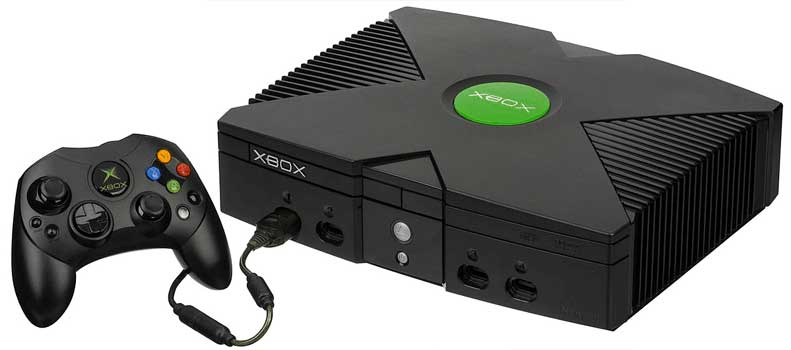
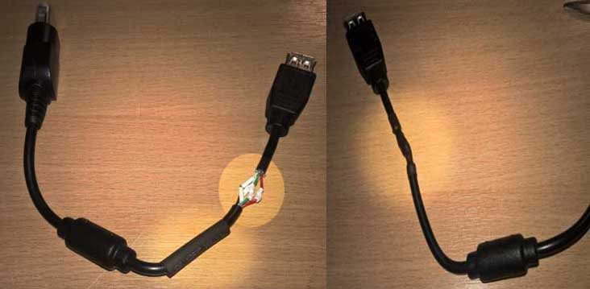
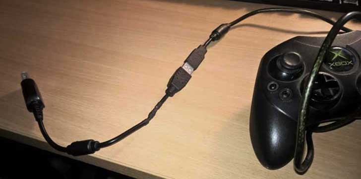

Chris Donnelly
C++ Engine Developer (Systems) in Frankfurt Am Main, Germany
Microsoft's original XBOX console was closer to a custom-built PC than most other consoles; it used intel chips, had a hard disk, and among other features, it used a properietary modification of USB as a connection for its peripherals. The controllers (the C-Type, S-Type, light gun, etc) use the USB protocol (and hardware) to communicate with the console, even though the physical shape of the connectors looks different, and an extra connector (and therefore wire) is present.
The original XBOX, in all its glory (with customized USB connections, front x4)
Here's we can see the first-generation XBOX gamepads use for their analog input values:
| Value Range | Deadzone | |
|---|---|---|
| Left/Right Trigger | 0 .. 255 (single axis) | ≤ 30 (single axis) |
| Left thumbstick | -32768 .. 32767 (per axis) | -7849 .. 7849 (per axis) |
| Right thumbstick | -32768 .. 32767 (per axis) | -8689 .. 8689 (per axis) |
| Left/Right Vibration Motor | 0 .. 65535 (linear) | unknown |
Anyway - the main point here is that games some games do not understand the data provided by 360 pads (such as analog triggers or buttons, or the range of the analog sticks may differ).
One such example is Tom Clancy's Splinter Cell: Chaos Theory for Windows PC - D-Pad, button and thumbstick values are the same using XInput joypads, but the triggers of an XBOX 360 pad (0 .. 255 single axis analog triggers) don't function correctly in-game, as this game expects zero/nonzero values (binary/button triggers), not the range of the analog triggers.
Splinter Cell: Chaos Theory on PC doesn't work well with XBOX 360 XInput analog triggers
It could be argued that technically the 360 triggers work as they provide a zero/nonzeero pattern for being pressed, but this is still a problem, as the value difference between off and on (not pressed vs pressed) is 1 unit of the 256 travel distance (zero inclusive) the trigger allows, but less than the recommended 30 threshold (deadzone). This would require on-the-fly editing to check that the trigger is either zero, or more than the 30 threshold needed to be considered pressed, providing a zero/nonzero value.
But, this way I get to use the pad the game was made for (on the console), and I get to tinker with some hardware.
Requirements:
Note: some cheaper USB extension cables do not follow the wiring colour scheme - voltage testing may be required.
Target platform: IBM PC Compatible, running Windows 10 64-bit, build 1803.
As mentioned above, the XBOX joypad uses a modified version of USB - the cable has the base four lines (D+, D-, GND, PWR), and additional line, used for timing the light gun accessory to the vertical blank (VSYNC) of the output display (remember, this console was designed to use CRT displays). Just by looking at the connector, it's not too obvious from the shape that this is USB-based, but it is possible to see the 5 connector plates (like the 4 standard USB plates on a connector).

The connectors and lines in an XBOX controller, and their purposes
The extra cable (yellow / VSYNC) is used for timing with special controller accessories (such as the light gun etc) to time the controller with the vertical screen blank; for the purposes of using the joypad, this cable can be removed, or at least disabled.
The cable was cut near the connector (the part which goes into the console), although I removed the breakaway points, it's easily possible to leave them intact, and cut between the breakaway point and the connector. Inside the main cable is a metallic coating for shielding (which was be peeled back), and the five wires represented in the above picture. The outer coating was stripped back 10-20mm for each of the newly-cut parts. This shows the internal red/black/green/white/yellow cables. Each of these cables (except yellow) was stripped back by about 5mm.
The YELLOW cable (the composite vsync timer) was not stripped back, it was simply safely clipped off/cut, as it is not being used here.
The USB extension cable was cut into two short parts (a connector and approximately 50mm of cable), and each end stripped back in the same fashion, leaving its four (red/black/green/white) internal cables stripped back by approximately 5mm.
The cutting and stripping above left me with:
Here's how to connect each wire:
| PWR | D- | D+ | GND |
|---|---|---|---|
| red - red | white - white | green - green | black - black |
The controller and extension cable MALE connector/cables were soldered together by matching line types. Each line was heat-shrink sleeved (tape can be used) to prevent shorting, and an external sleeve was applied to protect the cable interior.
The XBOX Connector (goes into the console) and the extension cable FEMALE connector were soldered together also by matching types (again, sleeved both internally and externally).
The female extension soldered to the male console connector
Effectively, this creates an extension (or passthrough) cable at teh controller's cut point, which is joined together by the opposing ends of the USB extension cable when being used on the XBOX, or allows the pad to be inserted into a standard PC USB port.
The PC-capable controller, extended to the XBOX connector - tested and functional on XBOX and PC
The process of installing the XBCD drivers may vary across versions of Windows, and may vary as new releases become available, so please refer to the XBCD website for instructions. Mine were installed under a 'unsigned drivers' boot of Windows to enable the pad to work in Windows 8/10
And until any remasters are available (please), I can now play Chaos Theory (and other games) using my original XBOX pad on both PC and original XBOX.